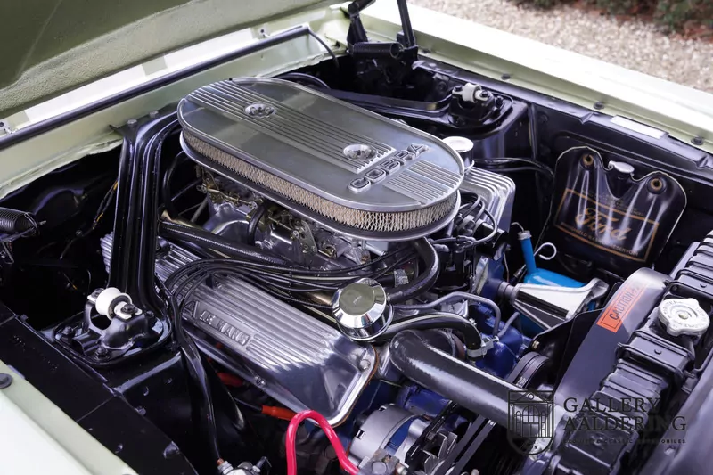
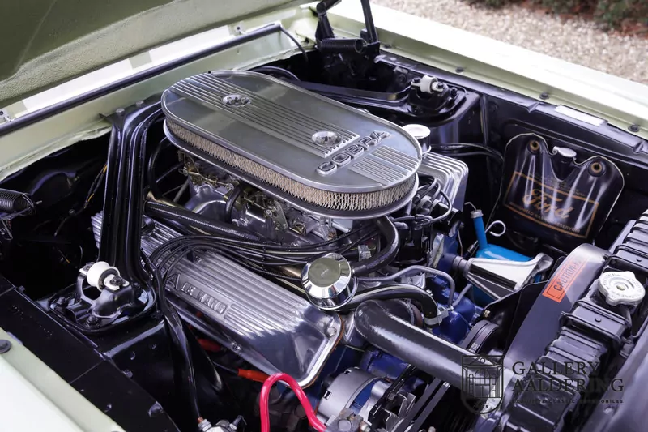

Ford Mustang GT 500 Clasic
Ford Mustang GT 500 Clasic este una dintre cele mai legendare mașini muscle americane, apreciată pentru designul său agresiv, performanța remarcabilă și moștenirea sa iconică. Acest model a fost lansat inițial în anii ‘60 și a devenit rapid un simbol al puterii și al pasiunii pentru viteză.
Ford Mustang GT 500 a fost creat sub influența legendarului Carroll Shelby, un inginer și pilot de curse renumit. Datorită performanței sale excepționale, a devenit rapid o alegere populară pentru pasionații de mașini sport și a fost imortalizat în filme celebre, cum ar fi Gone in 60 Seconds (Eleanor).
De ce este atat de apreciat?
- Putere brută și sunet inconfundabil – sunetul motorului V8 este un adevărat simbol al mașinilor muscle.
- Design clasic, atemporal – chiar și în prezent, rămâne una dintre cele mai dorite mașini de colecție.
- Valoare crescută – modelele originale sunt rare și extrem de valoroase pe piața mașinilor clasice.
Ford Mustang GT 500 Clasic nu este doar o mașină – este o legendă vie, un simbol al pasiunii pentru viteză și performanță, care continuă să inspire generații de fani ai mașinilor muscle. 🚗💨🔥
Ford GT 500 classic
Design si caracteristici
Ford Mustang GT 500 Clasic este ușor de recunoscut datorită:
- Grilei frontale impunătoare cu faruri duble și logo-ul cobra, simbolizând performanța supremă.
- Caroseriei aerodinamice și sportive, cu linii fluide și prize de aer laterale.
- Capotei alungite, oferind un aspect agresiv și elegant în același timp.
- Roților late și suspensiei joase, care oferă stabilitate și control.
Motor si Performanta
Acest model clasic vine echipat cu un motor puternic, făcându-l una dintre cele mai dorite mașini ale epocii sale:
- 🔥 Motor V8 de 7.0L (428 Cobra Jet) – dezvoltă peste 360 CP, oferind o accelerație impresionantă.
- 🚗 Transmisie manuală sau automată, oferind o experiență autentică de condus sportiv.
- 🏁 Viteză maximă de aproximativ 210 km/h, fiind una dintre cele mai rapide mașini ale vremii.
Galerie Foto


 
